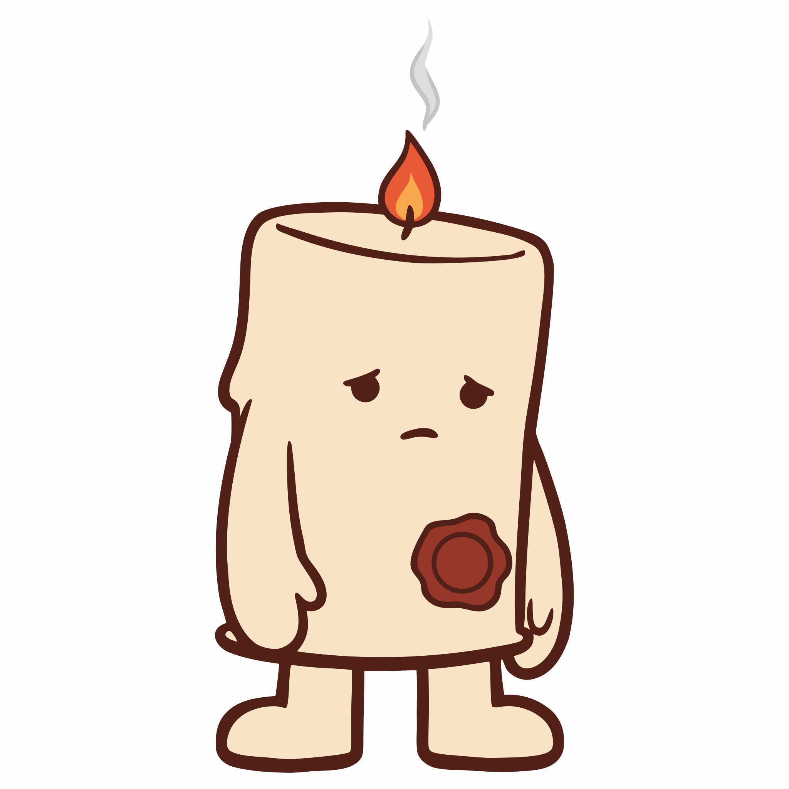
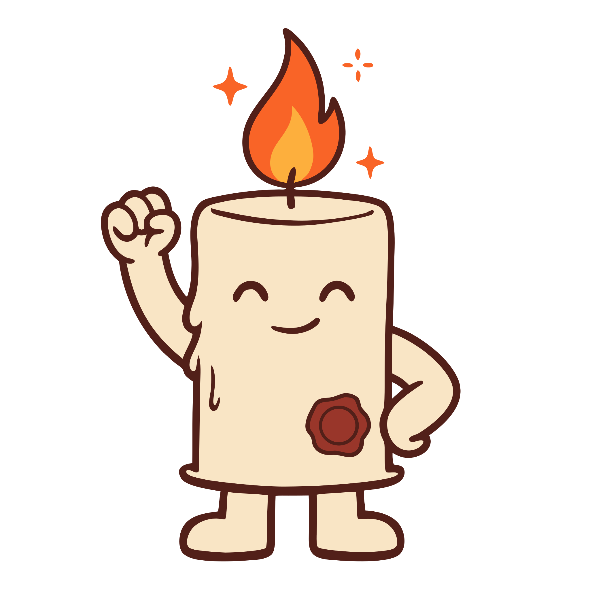

Non ti serve più forza di volontà. Ti serve qualcuno che sa dove stai andando.


Scegli chi la sa, abitudine per abitudine: vede solo quella, niente altro. I tuoi Hold arrivano da soli nella vostra chat, e può risponderti con una parola o una candela. Oppure tenetela in gruppo: la promessa è di tutti, il patto è di ognuno.
E se vuoi che la tua costanza accenda quella di altri, pubblicala in Esplora: chi tiene, chi torna, chi pianta una milestone. Le cadute lì non finiscono mai.
È il valore mediano per rendere automatico un gesto ripetuto ogni giorno, in uno studio su 96 persone. Ma da 18 a 254, a seconda della persona e dell’abitudine: non esiste un traguardo uguale per tutti.
VOW usa questa curva per il radicamento di ogni tua abitudine. E nello stesso studio saltare una volta sola non ha compromesso il percorso: per questo una caduta non azzera niente.
Lally, van Jaarsveld, Potts e Wardle · University College London · European Journal of Social Psychology, 2010Quasi 20.000 persone: seguire i propri progressi aiuta a raggiungere l’obiettivo, soprattutto se li annoti e qualcuno li vede.
Obiettivo solo in testa: il 43% arriva almeno a metà strada. Scritto e aggiornato ogni settimana con un amico: il 76%.
In un esperimento, chi aveva deciso quando e dove farlo ha portato a termine il compito nel 71% dei casi. Senza un piano, il 32%.
Dopo un test andato male, chi è stato gentile con sé stesso ha studiato più a lungo per il test successivo.
Per anni ho cercato il sistema giusto. Atomic Habits, i 7 Habits, decine di libri. Tecniche utilissime. Ma mi perdevo sempre nello stesso punto: da solo, in silenzio.
Poi ho fatto una cosa semplice. Un gruppo WhatsApp con 4 colleghi: allenarci insieme quattro volte a settimana, 5 euro a chi saltava. Il gruppo lo sapeva. Saltare aveva un costo reale e visibile.
Tutti e cinque abbiamo mantenuto l'impegno per 3 mesi. Più di quanto avessi mai fatto con qualsiasi app o promessa fatta a me stesso in silenzio.
VOW nasce da lì. Tiene quello che ha funzionato in quel gruppo e aggiunge la struttura: una promessa scritta bene, qualcuno che la sa, un voto al giorno e un modo dignitoso di tornare dopo una caduta. Per chi, come me, cerca il sistema giusto per diventare finalmente costante.
Oggi VOW lo usa un piccolo gruppo di persone, ogni giorno, con un witness vero accanto. Non pubblichiamo statistiche che non abbiamo: le mostreremo quando saranno dati veri.
VOW è in accesso anticipato.
Chi entra ora aiuta a costruirlo e avrà accesso completo gratis per sempre.